part 1: fun with filters~
1.1: Convolutions from Scratch
Here are my 2 different ways of writing convolution with some for loops:
convolution with 4 for loops:
def four_loop_convolution(arr, kernel):
m1, n1 = arr.shape
m2, n2 = kernel.shape
px, py = m2//2, n2//2
padded_arr = np.pad(arr, ((px, px), (py, py)), 'constant')
res = np.zeros_like(arr)
for i1 in range(m1):
for j1 in range(n1):
total = 0.0
for i2 in range(m2):
for j2 in range(n2):
total += padded_arr[i1+i2][j1+j2] * kernel[i2][j2]
res[i1][j1] = total
return res
(better) convolution with 2 for loops:
def convolve(arr, kernel):
m1, n1 = arr.shape
m2, n2 = kernel.shape
px, py = m2//2, n2//2
padded_arr = np.pad(arr, ((px, px), (py, py)), 'constant')
res = np.zeros_like(arr)
for i1 in range(m1):
for j1 in range(n1):
res[i1][j1] = np.sum(padded_arr[i1:i1+m2, j1:j1+n2] * kernel)
return res
Now let's see my convolution functions in action and compare it to scipy!
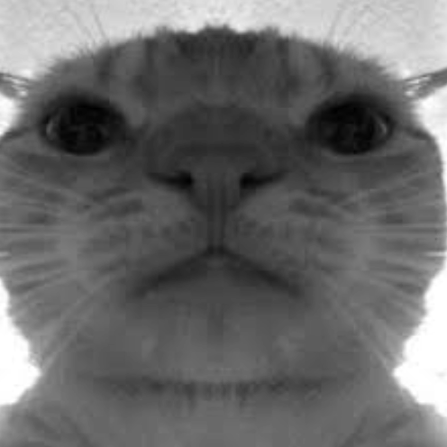

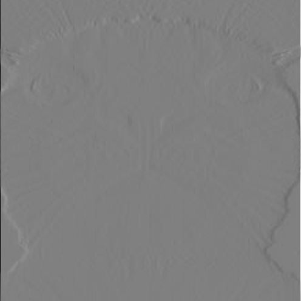
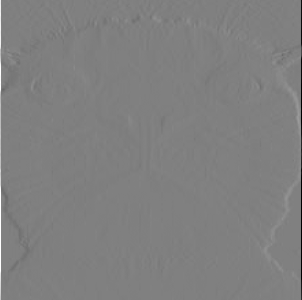
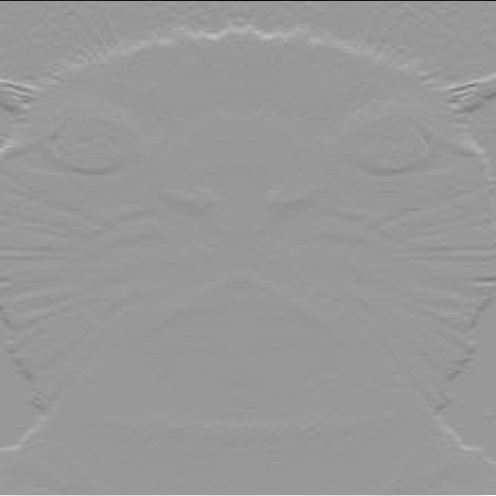
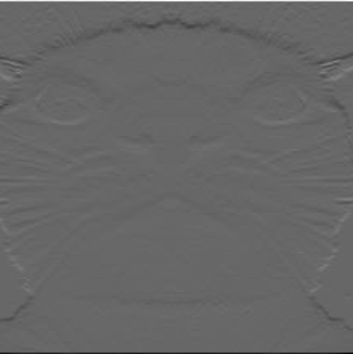
1.2: Finite Difference Operator
Show Dx, Dy, gradient magnitude, and binarized edge results.
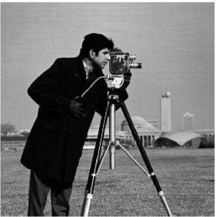
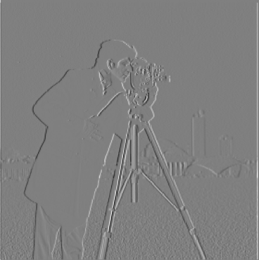
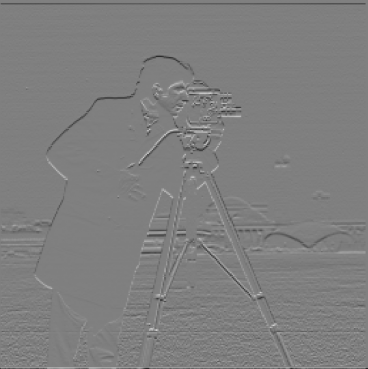
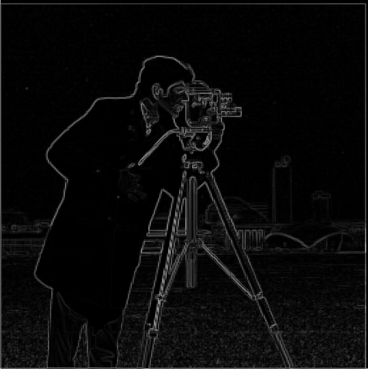
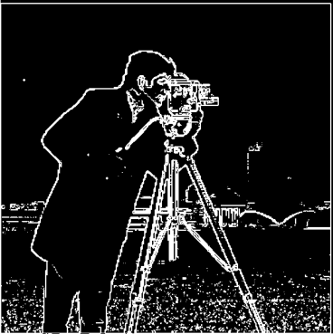
1.3: Derivative of Gaussian (DoG) Filter
As seen here, there are two methods, where we first convolve with the Gaussian and then the difference operator, versus convolving directly with the DoG filter (which itself is a composition of these two functions). From what I can tell, it appears that using the latter method (DoG) results in more defined edges, in that they are much clearer in the gradient magnitude image, and the edge images have larger, more contrasting, wider edges. I used the same threshold to try to keep it consistent. But you can also see this in the convolved images themselves. With the DoG images, you can see both in the x and y that the differences appear to be more obvious.
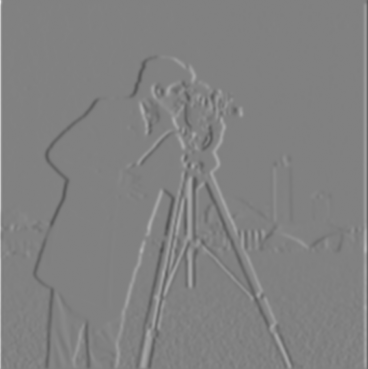
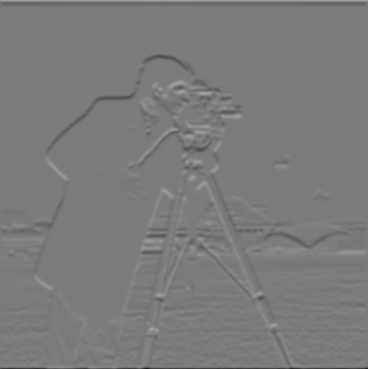
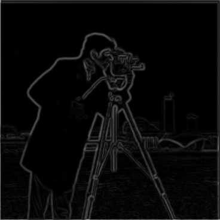
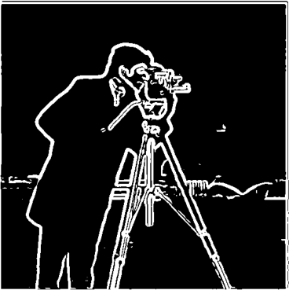
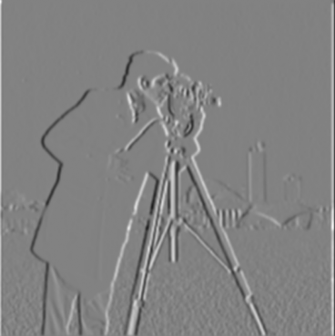
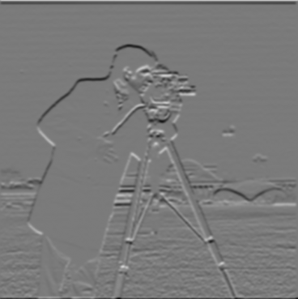
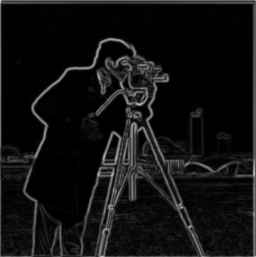
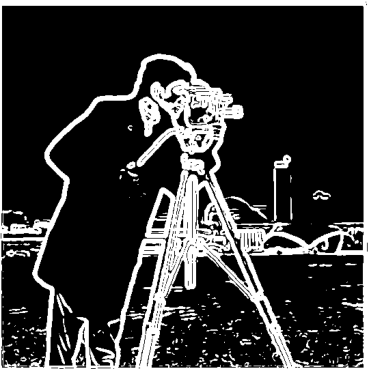
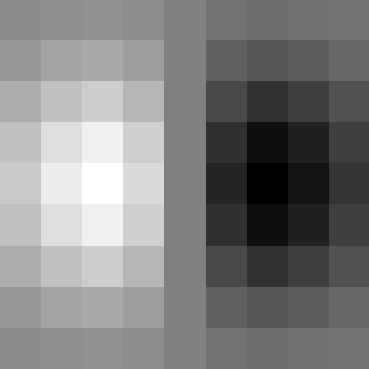
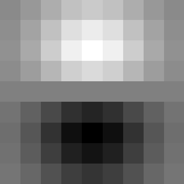
part 2: fun with frequencies !!
2.1: Image Sharpening
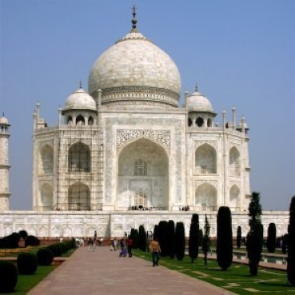
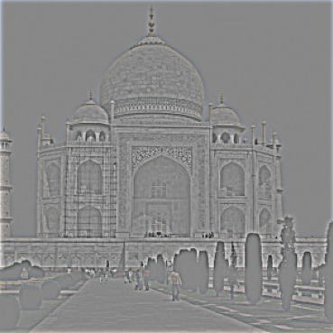
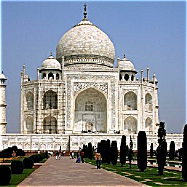
Resharpening:
Here I chose a sharp image from the Prokudin-Gorskii collection. I
think it's quite clear that the "resharpened" image looks even sharper
than before, and by that I mean the contrasts/outlines are more
apprent + lines we see in the photo are more apparent/stronger.
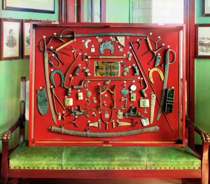
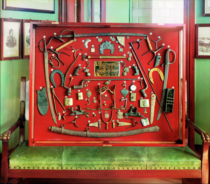
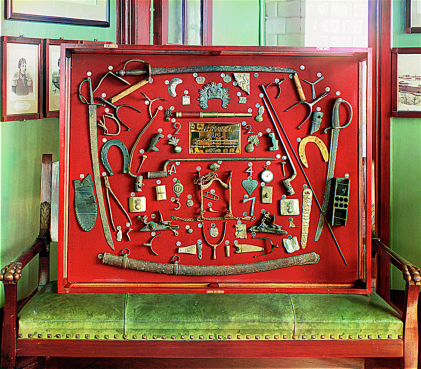
2.2: Hybrid Images
here is my workflow of making derek + nutmeg into a hybrid image. i ended up using _ value for gaussian?
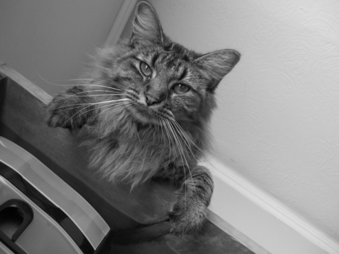
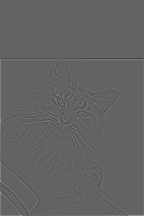
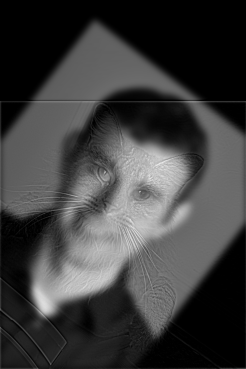
here are some results of taking the log magnitude of the Fourier Transform of the following:


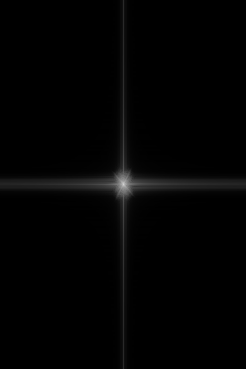
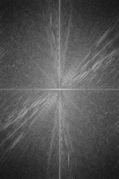
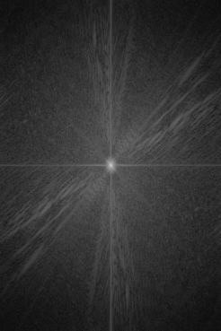
here are some more hybrid images!
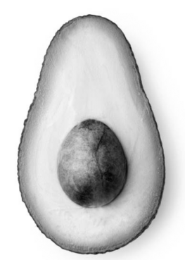
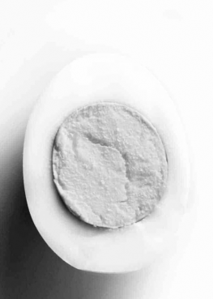
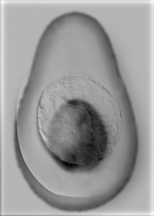
2.3: gaussian & laplacian stacks (k = 5, 0 to 5 left to right)
gaussian stack (apple)
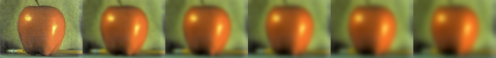
laplacian stack (apple)
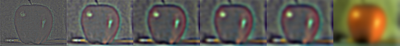
gaussian stack (orange)
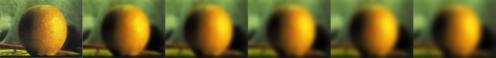
laplacian stack (orange)
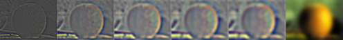
2.4: Multiresolution Blending (Oraple!)
here are my blended images:
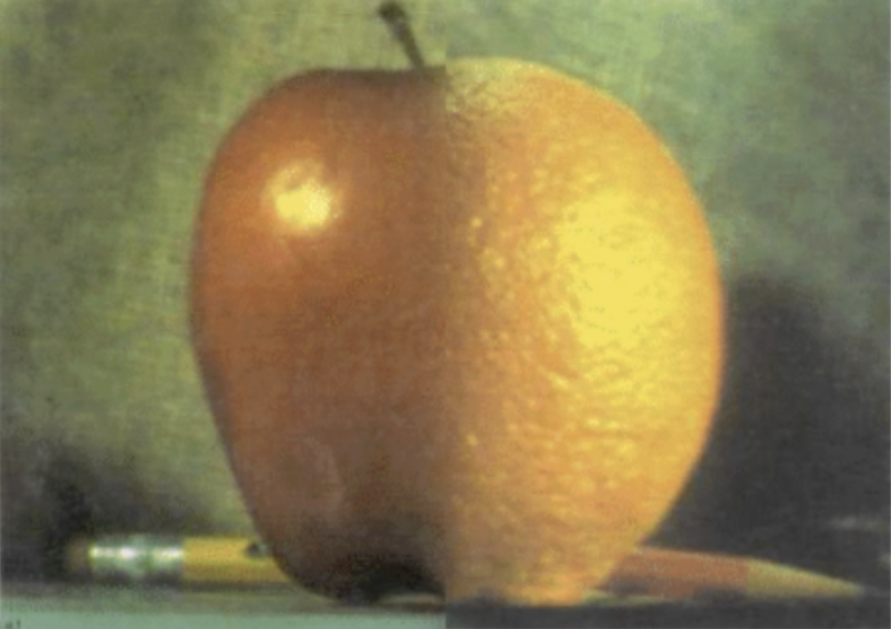
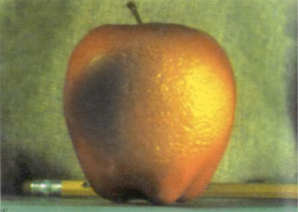
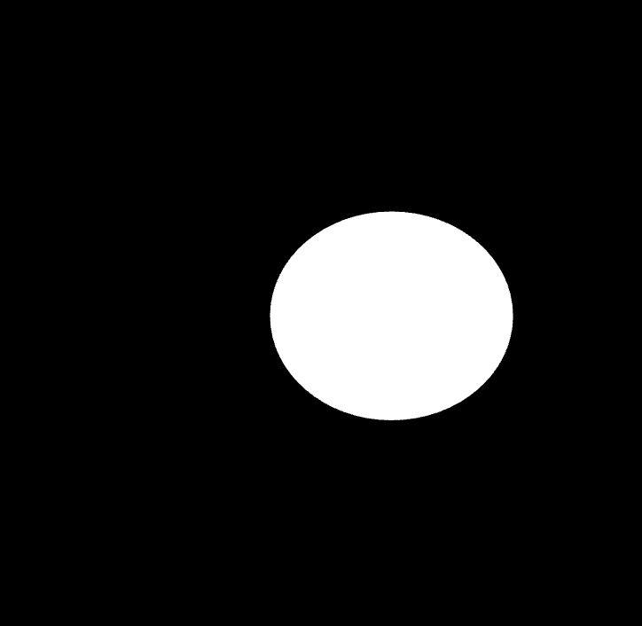
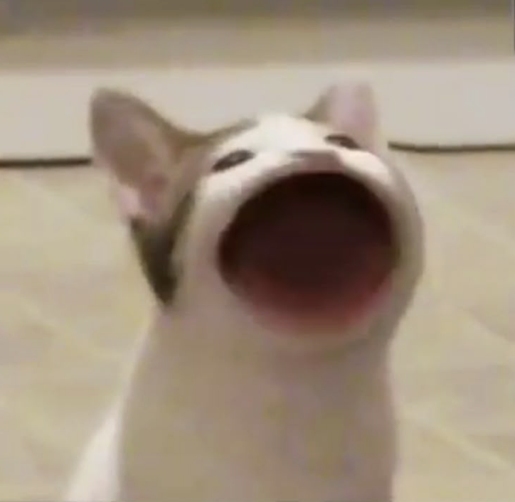
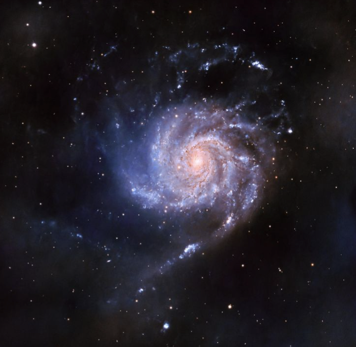
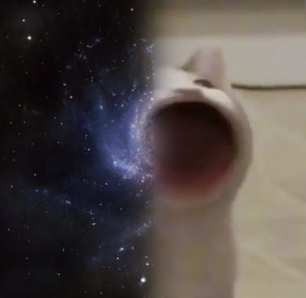
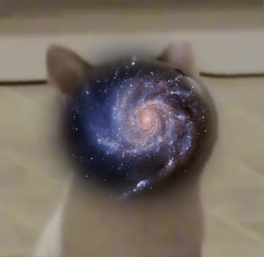
reflection ~
Overall I feel that I learned about the power of convolution. Increasing layers just adds to the possibility of what you can accomplish! Also I also feel like I learned how much information you can still keep by isolating high and Low frequencies in an image. And how much more you are capable of getting if you compose it together.